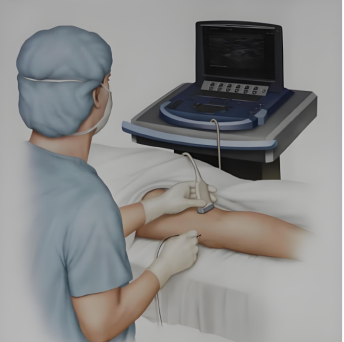

大连医科大学附属第一医院
金普院区 · 疼痛科病房
神经阻滞治疗注意事项
适合哪些情况？治疗后怎么护理？
一文看懂

🧠 神经阻滞是什么？
神经阻滞是疼痛科常用的治疗方法。医生会在相关神经附近注入药物，帮助减轻疼痛、缓解炎症。
它有时也可帮助医生判断疼痛来源：如果阻滞后疼痛明显减轻，说明该神经区域可能与疼痛有关。
是否适合做、做哪一种阻滞，需要由医生根据病情、检查结果和身体情况综合评估。
1
治疗前说清过敏史、用药史、基础病
2
治疗中配合保持体位，不随意移动
3
治疗后观察休息约 30 分钟再离开
4
不适及时说（头晕、恶心、气短等立即告知）
一、常见诊疗范围
💡 以下情况可以咨询疼痛科，具体是否适合神经阻滞治疗，以医生评估为准：
⚡ 神经痛类
带状疱疹及带状疱疹后神经痛
糖尿病性周围神经痛
幻肢痛、残肢痛
复杂性区域疼痛综合征
💆 头面部疼痛
三叉神经痛、舌咽神经痛
偏头痛
颈源性头痛
🏃 颈肩腰腿及四肢疼痛
颈椎病、颈肩痛
肩周炎（冻结肩）
腰椎间盘突出症、坐骨神经痛
网球肘、腱鞘炎、腕管/梨状肌综合征
🌟 星状神经节相关治疗
失眠、面神经炎（面瘫）、面肌痉挛
顽固性呃逆
突发性耳聋、美尼尔综合征等需医生评估的情况
二、治疗前和治疗中，患者怎么配合？
📋 治疗前先说清
保持注射部位皮肤清洁。
主动告知过敏史
，尤其是麻药过敏史。
主动告知正在服用的药物
，特别是抗凝药、抗血小板药、降糖药等。
如有发热、皮肤破损、局部感染、严重心肺疾病或凝血功能异常，请提前说明。
🤝 治疗中要配合
按医生和护士要求摆好体位。
穿刺过程中不要突然移动身体
。
如出现明显疼痛、头晕、恶心、心慌、耳鸣等不适，
请马上口头告知医生
。
三、治疗后注意事项（重点）
30 分钟
先休息观察，确认无明显不适
24 小时
注射部位避免沾水，保持清洁干燥
48 小时
避免剧烈运动、泡澡、搓揉治疗部位
🔍 可以先观察的情况
注射部位轻微酸胀、麻木或短暂疼痛加重。
局部少量淤青，一般可逐渐吸收。
星状神经节阻滞后：
可能有眼睑下垂、瞳孔变小、眼红或咽部异物感，多为暂时反应。
颈丛、臂丛等阻滞后：
可能出现一侧颈部或上肢麻木、感觉减弱，
请注意防跌倒、防烫伤
。
🚨 需要立即告诉医护的情况
头晕、耳鸣、恶心、呕吐、心慌或呼吸困难。
注射部位持续出血、明显肿胀、渗液、发热或疼痛持续加重。
肢体无力、麻木
明显加重
，或活动受限越来越明显。
出现皮疹、瘙痒、胸闷等疑似过敏表现。